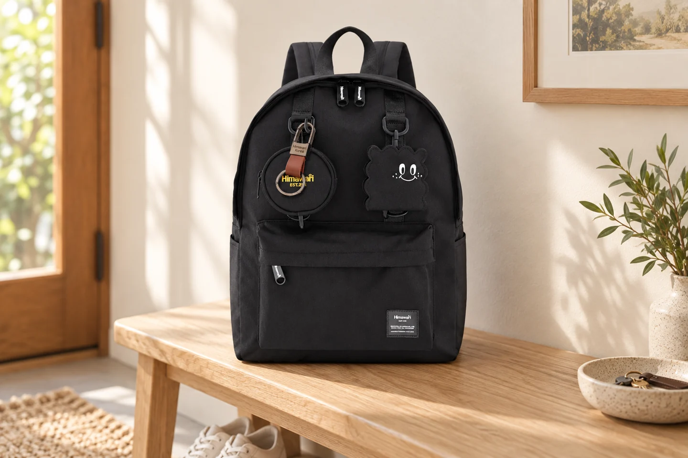

백팩을 손으로 옮길 때 무엇을 잡고 어디에 둘까

백팩은 등에 메고 다니다가도 의자에서 바닥으로 옮기거나 차에서 꺼낼 때 손으로 들게 됩니다. 짧은 이동이라 가방을 바로 잡아당기기 쉬운 순간입니다. 먼저 열린 칸과 밖에 걸린 끈을 보면 어떤 방향으로 들어야 할지 알 수 있습니다. 들어 올리는 곳뿐 아니라 내려놓을 면까지 정한 뒤 옮기는 순서를 생각해봅니다.
손으로 잡을 위치는 실제 제품의 사용 안내를 확인합니다. 눈에 보이는 고리나 장식이 모두 운반용은 아닙니다. 지퍼의 손잡이와 개인 키링을 본체를 드는 곳으로 쓰지 않습니다. 어떤 부분이 운반용으로 마련되었는지 불명확하면 임의로 시험하기보다 제품 자료나 문의 방법으로 알아볼 수 있습니다. 사용할 곳을 정한 뒤 현재 상태를 살펴봅니다.
들기 전에 가방의 열린 곳
메인 공간이나 주머니가 열려 있다면 내용물을 먼저 정리합니다. 밖으로 나온 소품과 물건이 어디에 놓였는지 보고 여밈을 확인하세요. 가방을 들어 흔들어 물건을 맞추는 방식으로 닫지 않습니다. 지퍼가 자연스럽게 닫히지 않으면 내려놓은 상태에서 무엇이 걸리는지 봅니다. 담긴 물건의 구성이 달라졌다면 위치를 조정할 수 있습니다.
옆쪽이나 바깥에 둔 소품도 확인합니다. 쉽게 빠질 상태라면 먼저 꺼내 정리하거나 실제 보관 안내에 맞춰 둡니다. 소품이 많아 하나씩 손으로 잡아야 한다면 가방을 들기 전에 이동할 묶음을 나눌 수 있습니다. 가방을 닫았다는 사실만으로 밖에 있는 물건의 준비까지 끝나는 것은 아닙니다.
제품을 손으로 옮기는 장면과 연결할 자료로 Himawari No.0422 제품 정보를 함께 소개합니다. 사용하는 가방에서 운반할 부분과 개인 장식을 구분해보세요. 오늘의 내용물을 넣은 실제 상태에서 열린 칸을 정리하고 이동할 곳을 먼저 봅니다. 손잡이의 사용 조건은 그 제품의 안내를 기준으로 확인합니다.

걸린 끈을 풀고 이동할 길 보기
어깨끈이 의자 다리나 다른 짐 아래에 놓여 있으면 먼저 위치를 확인합니다. 본체가 바로 따라오지 않는 상황에서 더 세게 당기지 않습니다. 무엇에 걸렸는지 보고 끈을 풀어야 다른 물건도 함께 움직이지 않습니다. 한 손에 다른 소지품이 있다면 잠시 정리한 뒤 가방을 옮기는 선택도 가능합니다.
손잡이와 연결 부위에서 눈에 띄는 이상을 발견했다면 사용하기 전에 상태를 알아봅니다. 어느 부분이 어떻게 보이는지 사진으로 남겨 문의할 수 있습니다. 지금 들고 옮겨도 되는지 확인하지 못한 상태를 괜찮다고 가정하지 않습니다. 제품의 관리·수선 안내와 사용 조건을 기준으로 다음 이동 방법을 정합니다.
가방을 잡았을 때 무겁거나 다루기 어렵게 느껴지면 내용물을 나누거나 다른 운반 방법을 선택할 수 있습니다. 다른 손으로 본체를 받칠 수 있는지는 현재 짐과 제품 안내에 맞춰 판단합니다. 손잡이 하나를 잡은 채 크게 휘두르거나 멀리 던져 내려놓지 않습니다. 옮길 거리가 짧아도 어떤 동작으로 둘지 알아두는 편이 낫습니다.
차에서 꺼낼 때는 가방과 다른 짐의 관계를 봅니다. 몸체 위에 다른 물건이 올려져 있으면 그것부터 정리하고, 밖에 나온 끈이 어디로 이어지는지 확인합니다. 문과 좌석 사이에서 꺼낼 방향이 좁으면 가방을 밀어 빼기보다 필요한 공간을 정합니다. 차나 장소의 보관 안내가 있으면 그 조건에 맞춰 이동합니다.
손을 놓기 전 본체가 놓일 면
내려놓을 곳은 눈으로 현재 상태를 봅니다. 물기나 다른 소품이 있는 곳이면 옮길 위치를 고를 수 있습니다. 책상 모서리에 일부만 걸치거나 의자 끝에 놓으려는 상태인지 확인하세요. 본체가 놓일 면이 어떻게 받쳐지는지 알아본 뒤 손을 놓습니다. 가방이 들어갈 자리를 만들기 위해 다른 사람의 물건을 임의로 옮기지 않습니다.
끈은 본체 가까이 정리해 통로나 발의 움직임과 겹치지 않게 합니다. 가방을 안정적으로 놓았어도 길게 남은 끈이 다른 물건 아래로 들어가면 다음 이동에서 다시 확인해야 합니다. 어느 방향에서 다시 들거나 멜지 생각하면 끈을 둘 위치도 구체적입니다. 보관 장소에 정해진 안내가 있으면 그 방식대로 정리합니다.
긴 거리를 이동할 때는 제품에서 안내한 착용과 운반 방식을 따릅니다. 잠깐 손으로 옮기는 것과 손잡이에 오래 매달아두는 것은 각각의 사용 조건을 확인할 필요가 있습니다. 임의의 무게 한도를 정해 괜찮다고 판단하지 않습니다. 보관할 계획이면 바닥을 둘 면과 주변에서 눌리는 물건이 있는지 함께 봅니다.
다시 멜 때는 내용물과 여밈이 현재 어떤 상태인지 봅니다. 짧은 이동 중 꺼낸 소품이 있다면 원래 위치로 돌려놓습니다. 가방을 옮기기 전에 닫았다고 이후에도 같은 상태라고 기억에만 의존하지 않습니다. 등으로 돌아갈 때 걸린 끈이 없는지 확인하고 제품의 착용 안내에 맞춰 사용합니다.
가방을 드는 동작이 자주 번거롭다면 어떤 단계에서 어려웠는지 남겨볼 수 있습니다. 물건이 밖에 나와 있었는지, 끈이 의자 아래에 걸렸는지, 내려놓을 자리가 좁았는지 구분합니다. 해결할 것은 더 힘주어 잡는 방법보다 열린 곳과 이동할 길, 놓일 면의 배치일 수 있습니다. 손을 대기 전에 그 세 위치가 보이는 순서를 만들어봅니다.